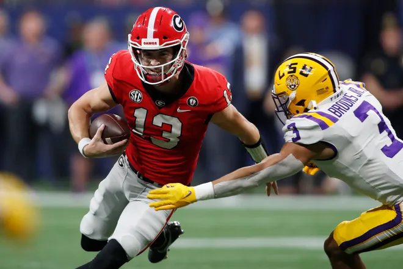
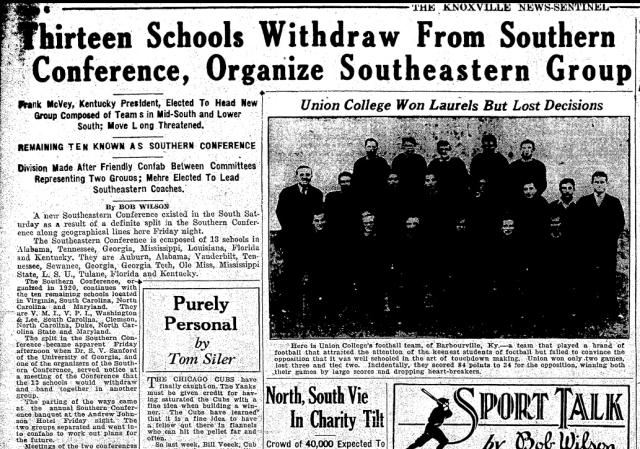

College athletics are unlike anything the sports industry has to offer. Symbolizing the epitome of school pride and a sense of identity, college athletics are beloved by sports fans nationwide. Whether you’ve graduated from the school or grew up in the university area, college sports allow for a more unique level of fandom that transcends professional leagues.

Photo by Joshua L. Jones.
On the opposite ends of this college sports spectrum lie the Southeastern Conference (SEC) and the Mid-Atlantic Conference (MAC). Within the Football Bowl Subdivision (FBS), the SEC and the MAC differ drastically from a financial lens. The SEC holds the title of having the highest expenses and revenues, and the MAC for the lowest in both aforementioned categories. The reason for this…football.
According to Business Insider, but to no one’s surprise, college football brings in the most money by a landslide. The average team accumulates more dough than the next 35 leading sports combined.
Fortunately for the SEC, they’re quite exceptional at the sport, home to notoriously successful programs such as the University of Alabama, University of Georgia, University of Florida, and Louisiana State University. According to the NCAA, the conference has won 13 national championships since 2000, and have a no. 1 ranked contender in this year’s CFP, the Georgia Bulldogs.
That leaves us with the MAC, that unlike the SEC, does not carry the same distinction amongst its football teams. According to the Medium, there have only been four instances in which a MAC team was ranked. Northern Illinois University ranked #22 in 2012, Central Michigan University ranked #23 in 2009, Miami University ranked #10 in 2003 and Bowling Green State University ranked #23 also in 2003. It appears as though 2003 was a one-of-a-kind year for the MAC.
But despite how different these conferences may appear, they share similar expense patterns…to an extent. The dollar values are not comparable between conferences, but the areas in which they spend their funds are the exact same.
As shown in the graph above, both the SEC and the MAC spend the most on the same four areas: Athletic Student Aid, Coaches Compensation, Support and Admin Compensation w/Severance, and Facilities and Equipment. But even in similarity these conferences remain different as the order in expense is opposite. The SEC’s highest expense is Facilities and Equipment and fourth highest is Athletic Student Aid, while that is reversed for the MAC as their highest expense is Atheltic Student Aid and fourth highest is Facilities and Equipment. The same opposite order applies to Coaches Compensation and Support and Admin Compensation w/ Severance.
These differences only intensify when it comes to revenues. As demonstrated by the graphs above, over 75% of SEC and MAC earnings completely differ from each other. The SEC top revenues are credited to NCAA/Conference Distributions and Donor Contributions while the MAC top revenues originate from its Institutional/Government Support and Student Fees.
Diving Into the Difference
So why is there such a disparity between these two conferences? They both have a dozen or so football teams, why do they lie at opposite ends of the spectrum? There are a plethora of reasons, the first being size.
Both the size of the conference and the size of the schools differ between the SEC and the MAC. The SEC has 14 schools, while the MAC only has 12. Though two more football programs may not sound like a lot, having 14 teams adds around 15% more revenues and expenses compared to the 12 team MAC.
The sizes of the universities within these conferences also differ dramatically. According to College Evaluator, the SEC brought in 366,263 undergraduate and 111,739 graduate students for the 2021-2022 academic year, while the MAC admitted only 193,407 undergraduate and 54,769 graduate students.

Source: The Knoxville News-Sentinel.
The history of these two conferences differ as well. According to SEC History, the Southeastern Conference was formed in 1933 including ten teams. The conference expanded twice, once in 1991 adding University of Arkansas and University of South Carolina, and again in 2012 with University of Missouri and Texas A&M University. The history of the MAC is less stable. According to SB Nation, since the MAC’s inception in 1946, “it’s expanded to as far south as Florida and east as Tempe”. The current 12 teams have been the conference for at least 24 years, and though consistency may appear to be a positive characteristic, the MAC has remained pretty stagnant in its underwhelming performance…so maybe some change could be a good thing?
Though size and history present stark dissimilarity, according to Professor Rodney Paul, the real difference between the success of SEC and the MAC lies in the culture. Paul, who specializes in sports analytics and economics at Syracuse University, recognizes the relative availability of substitutes, meaning, "many of the fans of MAC schools probably are very diehard NFL fans, or Ohio State fans or Michigan fans”. There aren’t as many Alabama fans who also choose to be fans of Troy University just down the road. These substitutes as mentioned by Paul, whether professional or college, are a major reason why smaller conferences like the MAC don’t garner the kind of success that the SEC does.
The SEC in particular lacks these substitutes. With no professional football teams located in Alabama, Mississippi, Arkansas, Kentucky, Missouri, and South Carolina, SEC fans give their all to the most “major” team in the area, whether that’s through media viewership, ticket sales, merchandise, or donor gifts.
Additionally, the SEC is spread across 11 states, while the MAC is only dispersed across 5. With 9 of the MAC’s teams being located in Ohio and Michigan, football fans are more likely to cheer for bigger, consistently winning schools like The Ohio State University, University of Michigan, and Michigan State University.
Despite this, Paul notes that the alumni base for MAC schools is extremely helpful for revenue growth. However, even when considering the aforementioned undergraduate and graduate student numbers, the SEC garners more alumni fanfare and resulting revenues by a landslide.
So the question remains, will the MAC ever match the height of the SEC? The short answer is no, if even it did have the billions, simply due to the winning cultures and lack of available substitutes in the SEC.
But at the end of the day, the MAC doesn’t need to be the SEC. Professor Paul maintains that the MAC serves its purpose. “It gets alumni involved, it gets people back, it gets people excited”. Sports play a big role in our culture, it's imperative that they remain at different levels.